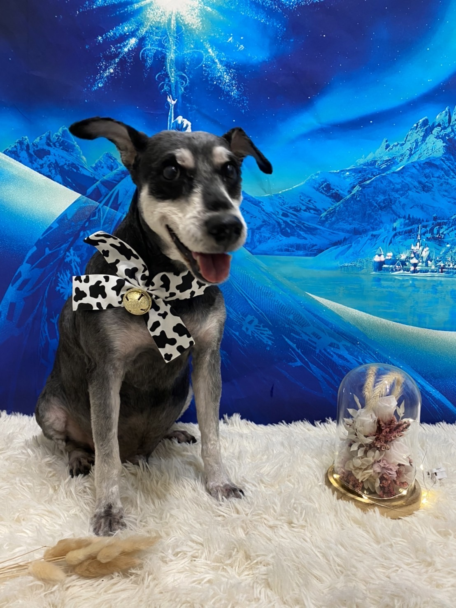

關於本站
歡迎光臨。主人都是家庭成員,都是一起照顧寵物們。
※未經許可，請勿擅自複製轉載。
我家的寵物們
●笨笨（♂）

他是我一出生就有寵物,很乖很聽話也很愛撒嬌!
●恰恰（♂）

因為上一隻狗狗走了,看爸媽很難過,姐姐們就一起帶恰恰回了
很愛玩的他,每次看到我都會想找我玩或叫我帶牠去散步~
●乖乖（♀）

是一隻很老很老的喵喵~ 在我幼稚園的時候，姐姐在爸爸的菜園看到一群剛出生的貓窩抓回來養的,從小就很愛玩也愛黏人!
主人介紹

- 暱稱 ：
- Hank's
- Mail ：
- hank0426998168@yahoo.com.tw
- Web ：
- https://www.google.com